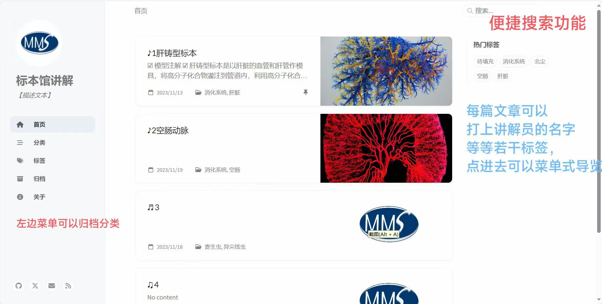

虚拟仿真刷牙科普软件
自主开发的口腔刷牙虚拟仿真科普软件，通过3D交互技术还原正确刷牙的全流程， 可视化展示牙菌斑清洁效果，针对不同年龄段用户打造沉浸式口腔健康科普体验， 解决传统口腔科普抽象、互动性弱的痛点。
体验软件详情趣味认牙科普软件
以游戏化交互模式打造的牙齿认知科普软件，通过闯关、答题、3D模型拆解等趣味形式， 帮助用户快速识别牙体形态、掌握牙体解剖知识，将专业的口腔医学知识转化为轻量化、 易接受的科普内容，适配中小学口腔健康教育与大众科普场景。
查看软件详情学院标本馆科普网站

为学院口腔标本馆独立开发的线上科普网站，实现标本3D全景展示、病理知识科普、 线上预约参观等功能，将线下馆藏资源数字化，打破时空限制，打造线上口腔医学科普阵地， 助力学院教学与公众科普双向赋能。
访问科普网站口腔主题3D建模文创产品设计
以口腔解剖结构为核心灵感，设计并建模制作系列口腔医学主题文创产品， 融合专业知识与美学设计，通过3D打印实现落地，打造兼具科普性与纪念意义的口腔文化周边， 让医学知识以更年轻化、生活化的形式触达大众。
项目展示视频学院动态logo设计
为学院设计的动态logo版本，在保持原有院徽视觉识别核心的基础上， 通过流畅的动画效果赋予logo生命力，适用于学院网站、宣传片、会议开场等多种数字化场景， 提升学院视觉形象的现代感与传播力。
动态logo设计展示校园与城市航拍作品
以航拍视角记录中山大学北校园、学院地标与城市风光，通过专业的镜头语言与后期制作， 呈现校园风貌与城市景观的独特美感，作品兼具纪实性与艺术性， 定格校园时光与城市发展的精彩瞬间。
航拍作品合集